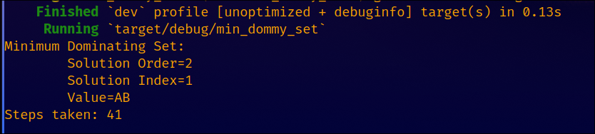

Here's a couple of my more impressive math projects.
One of the most unintuitive results to a science experiment is that of the Double Slit experiment and the variations of it. What this shows is that particles travel as probablility waves which can interfere with each other. Given the frequency of the wave, distance between the sources, and distance to a screen parallel to the line drawn through the sources, there is a formula that is pretty readily available. However, that's assuming that there are only two sources. What if there's any number of sources at any position? I got into solving this problem when the pattern is projected onto either a plane some distance away or a radius some distance from the origin. For each of these I also found the limit as the distance goes to infinity.
The Minimum Dominating Set problem is an NP-Complete problem where given a graph, you must find the minimal set of vertexes that spans the entire graph. I managed to define a uniform circuit family that can solve this problem in a linear time complexity. This seems rediculous because it's an NP-Complete problem, but it has exponential space complexity and uses layers that are massive. Each layer only needs information from the previous one and all operations on each layer are done concurrently, so while the number of layers is linear the number of operations is still exponential. Nevertheless, it's one of the more impressive things I've done. It works by using a set of recursive bitwise operations that can each process a bunch of comparisons in a single step. The picture below is of the output from simulating a circuit for a graph with 4 nodes. 41 steps to find the minumum set of this isn't very good, but this is with no optimizaitons and it grows linearly with each added node.
